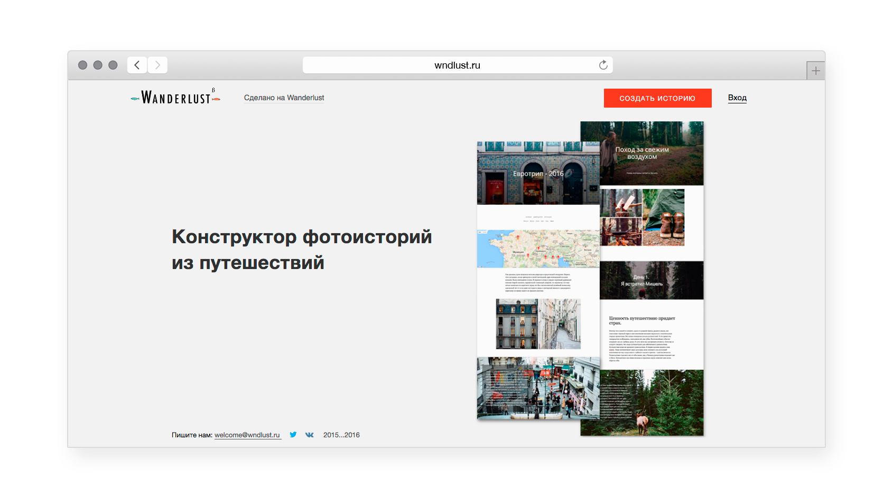
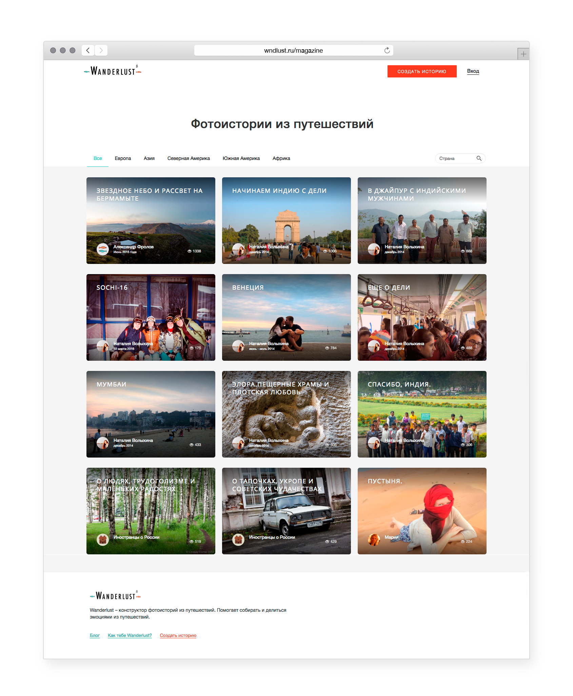
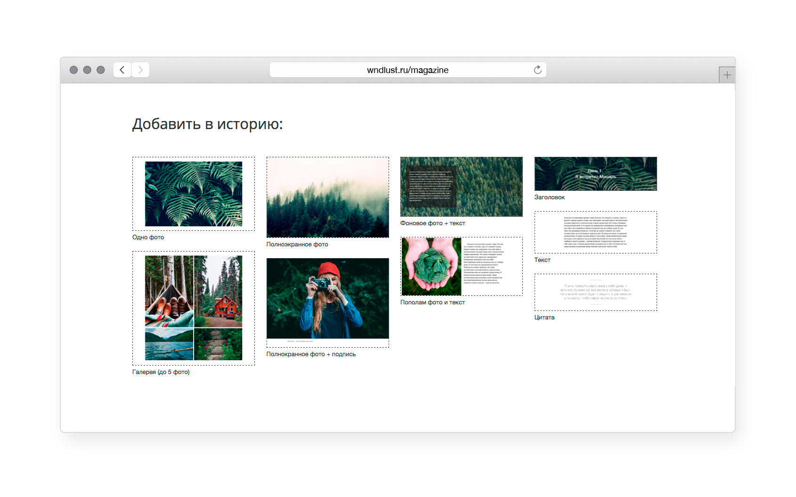

Наталия Волыхина
Портфолио
Наталия Волыхина
Портфолио
Дизайн, верстка и front-end сервиса Wanderlust
Wanderlust — сервис для тех, кто путешествует и собирает истории из путешествий.
Основа сервиса — конструктор, который позволяет быстро сверстать страничку из фотографий и текста. На карте отмечаются страны, где был и откуда уже есть истории.
http://wndlust.ru/



http://wndlust.ru/